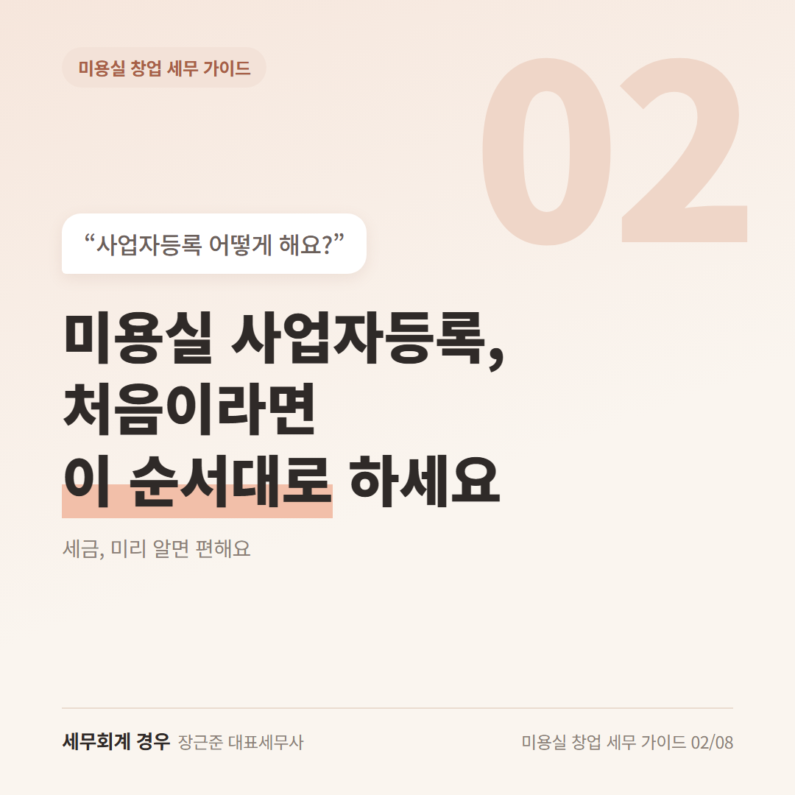
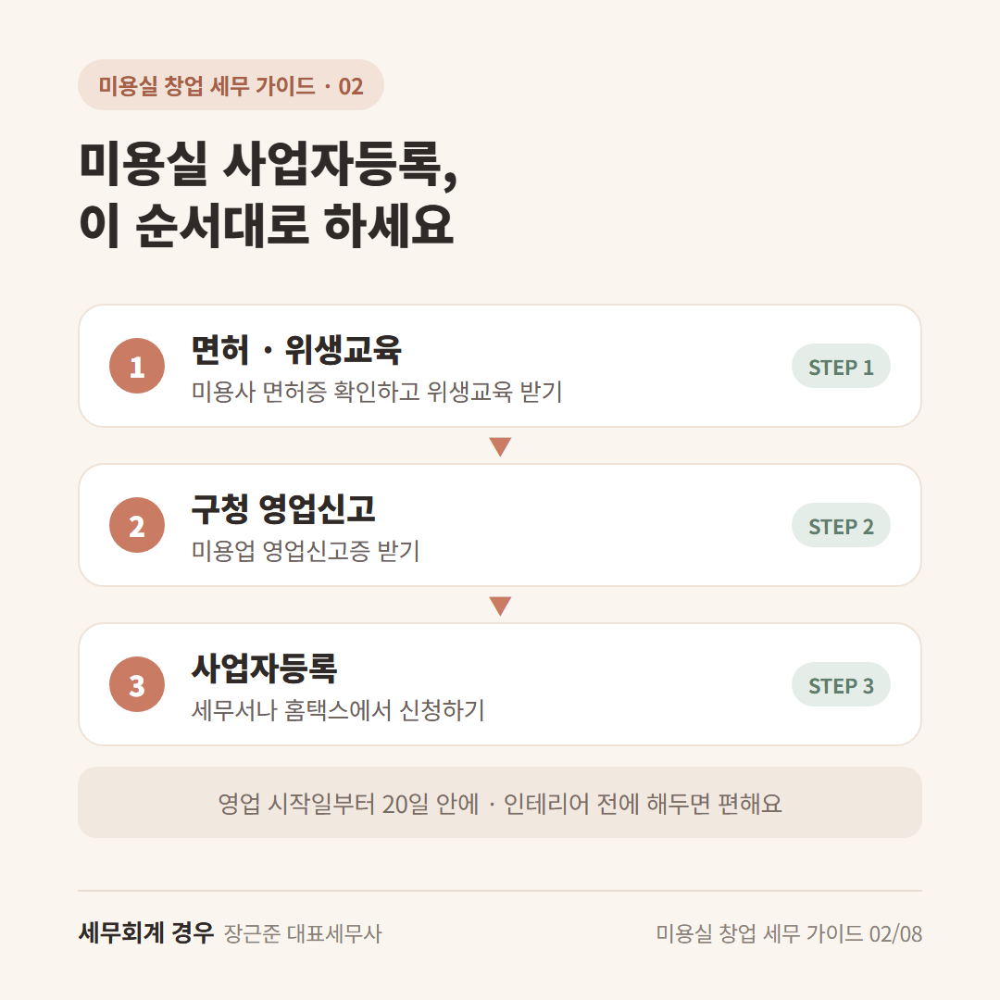
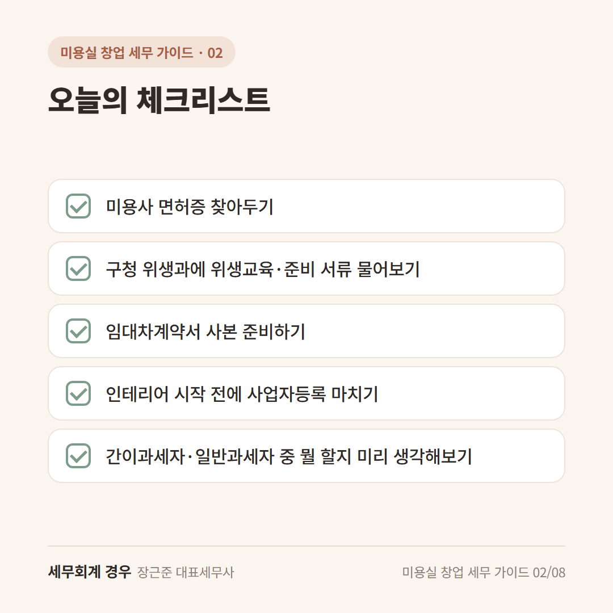

미용실 창업 세무 가이드 · 2번째 글
미용실 사업자등록, 처음이라면 이 순서대로 하세요

마음에 드는 자리를 찾아 계약서에 사인하고 나면 이런 생각이 들어요.
"이제 사업자등록부터 해야 하나? 어디로 가야 하지?"
미용실 사업자등록은 순서만 알면 어렵지 않아요.
미용실은 세무서에 가기 전에 한 단계가 더 있다는 것만 기억하세요.

1단계: 면허증 확인하고 위생교육 받기
미용실을 열려면 미용사 면허가 있어야 해요.
오래전에 받아서 면허증을 못 찾겠다면, 재발급부터 먼저 챙기세요.
그리고 영업신고 전에 위생교육(샵 운영자가 받는 기본 교육)을 받아야 해요.
교육 방법이나 준비 서류는 지역마다 조금씩 달라요.
구청 위생과에 전화로 먼저 물어보시면 헛걸음하지 않아요.
2단계: 구청에 미용업 영업신고 하기
샵 계약을 마치고 시설이 갖춰지면, 구청에 영업신고를 해요.
신고가 끝나면 영업신고증을 받는데, 이게 사업자등록에 필요해요.
쉽게 말하면, 구청은 "여기서 미용실 해도 돼요"를 확인해주고
세무서는 "이제 세금 내는 사장님이에요"를 등록해주는 곳이에요.
3단계: 세무서나 홈택스에서 사업자등록 하기
준비물은 보통 이 정도예요.
- 신분증
- 임대차계약서
- 미용업 영업신고증
세무서에 직접 가도 되고, 홈택스(국세청 누리집)에서 온라인으로 신청해도 돼요.
업종을 고르는 칸이 헷갈리면 세무서 직원에게 "미용실이에요"라고 물어보셔도 괜찮아요.
이때 간이과세자로 할지, 일반과세자로 할지 고르게 돼요. 이건 다음 편에서 쉽게 정리할게요.
사업자등록은 영업을 시작한 날부터 20일 안에 하면 돼요.
그래도 인테리어 전에 미리 해두시면, 영수증 챙기기가 훨씬 편해요.
오늘의 체크리스트

- 미용사 면허증 찾아두기
- 구청 위생과에 위생교육·준비 서류 물어보기
- 임대차계약서 사본 준비하기
- 인테리어 시작 전에 사업자등록 마치기
- 간이과세자·일반과세자 중 뭘 할지 미리 생각해보기
자주 묻는 질문
사업자등록만 해도 바로 세금이 나오나요?
아니요. 등록만으로는 세금이 나오지 않아요. 신고 시기가 되면 실제 매출을 기준으로 계산해요.
친구랑 같이 차리면 어떻게 등록해요?
함께 이름을 올리는 방법이 있는데, 나누는 비율 같은 걸 정해야 해요. 상황마다 달라서 상담으로 확인하시는 게 좋아요.
마무리
미용실 사업자등록은 "면허·위생교육 → 구청 → 세무서" 순서만 기억하시면 돼요.
서류 준비하다 헷갈리는 부분이 생기면, 창업 전에 한 번 편하게 물어보세요.
개인 상황에 따라 달라질 수 있으니 자세한 내용은 상담으로 확인하세요.